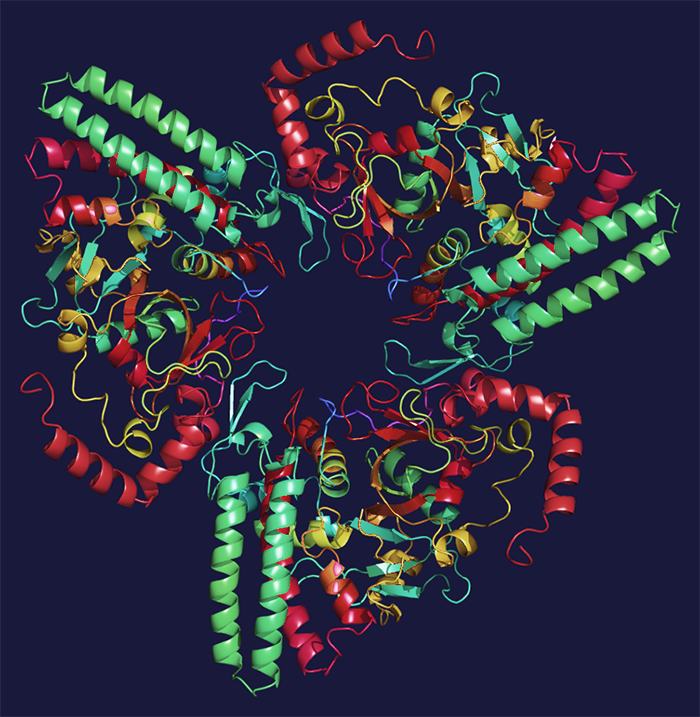

- Insira as credenciais de segurança - - Autorização de segurança adequada. Acessando arquivo... -
SCP-008

- Item nº:
- SCP-008
- Classe do objeto:
- Euclid
Procedimentos Especiais de Contenção:
As amostras do SCP-008 foram classificadas como riscos biológicos extremos Classe V, e todos os protocolos relacionados se aplicam. Medidas de incineração e irradiação serão acionadas em caso de ação política ou militar que possa resultar no desmantelamento da instalação; de falha de energia; ou de nenhuma comunicação com operativos ou canais externos durante qualquer período de oito horas.
O período de quarentena para operativos que deixam a instalação é de quatro meses. Se ocorrer uma violação, medidas de incineração e irradiação serão acionadas. Deve ser política de todas as instalações G2 não preparar um procedimento de evacuação.
Descrição:
O SCP-008 é um príon complexo, cujas amostras são armazenadas em cada uma das instalações G2 conhecidas. A pesquisa sobre o SCP-008 é altamente classificada e visa principalmente impedir pesquisas que possam levar à síntese do SCP-008 em um futuro distante. As características do príon SCP-008 incluem:
- 100% de infecciosidade.
- 100% de letalidade.
- Transmissão por membranas mucosas expostas e todos os fluidos corporais.
- Não é transmitido pelo ar nem pela água.
Os sintomas da infecção pelo SCP-008 se manifestam em no máximo três horas após a exposição, e incluem:
- Sintomas semelhantes aos da gripe, com febre alta, além de demência grave nos estágios avançados.
- Início do coma aproximadamente 20 horas após o aparecimento dos primeiros sintomas e 12 horas após a demência se tornar perceptível. O início do coma será considerado o início da morte.
- Ocorre um período de necrose celular esporádica que passa a se assemelhar à gangrena. O tecido que sobrevive assume sua função original e é altamente resistente.
- As hemácias aumentam muito a capacidade de armazenamento de oxigênio, resultando em fluxo sanguíneo mais lento e maior resistência e força muscular.
- Os sistemas nervoso e muscular não são afetados pela falência total dos órgãos por várias horas.
- O metabolismo pode cair a níveis extremamente baixos, permitindo que o sujeito sobreviva por mais de 10 anos sem alimentação.
- A alta viscosidade do sangue resulta em fluxo sanguíneo desprezível em ferimentos por arma de fogo, perfuração e corte.
- O comportamento condicionado, os controles motores e os mecanismos comportamentais instintivos são danificados, e as capacidades cognitivas ficam severamente prejudicadas e erráticas. Animais sofrem necrose cerebral excessiva e ficam inativos.
- O sujeito consegue se adaptar ao sistema nervoso danificado, mas fica limitado a atividades físicas básicas, como ficar de pé, equilibrar-se sobre duas pernas, andar, morder, agarrar e rastejar. O sujeito se move com energia em direção a imagens, sons e cheiros que associa a humanos vivos. O sujeito tentará ingerir humanos vivos se houver contato físico.
- Neutralizar sujeitos totalmente infectados exige trauma craniano significativo.
Há fortes indícios de que o próprio SCP-008 não se formou naturalmente na Terra, já que variantes de complexidade semelhante teriam deslocado grande parte do ecossistema. Em 1959, após sua descoberta, foi negociado um breve esforço de colaboração com a URSS para localizar as instalações G2 e eliminar o SCP-008. O status do SCP-008 sob custódia russa desde o fim da colaboração é desconhecido.
Adendo 008-1: Descobriu-se que o SCP-500 é capaz de curar completamente o SCP-008, mesmo nos estágios avançados da doença.